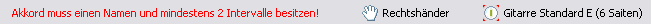

In der Statusleiste am unteren Rand der Anwendung werden wichtige "Statusinformationen" des Programms angezeigt. In unserem Fall werden hier die folgenden Punkte dargestellt:

Ganz rechts in der Statusleiste wird angezeigt, welches Instrument gerade aktiv ist. Das aktive Instrument gibt an, auf welchem Instrument die Berechnungen ausgeführt werden. Du kannst das aktive Instrument in der Sicht Instrumente setzen. Doppelklick auf diese Statusleisten-Anzeige öffnet das aktive Instrument in einem Instrumenten-Editor. Ist gerade kein Instrument aktiv (also existiert kein Instrument in der Instrumentenliste), wird dies hier mit "Kein aktives Instrument!" angezeigt. Ein Doppelklick auf die Anzeige öffnet in diesem Fall einen leeren Instrumenten-Editor zum Definieren einen neuen Instruments, welches per Default dann auch gleich zum aktiven Instrument gesetzt wird.
Du kannst in der Statusleiste zudem auswählen, ob du Rechts- oder Linkshänder bist. Entscheidend ist hierbei die Hand, welche das Instrument zum klingen bringt (zupft, anschlägt, ...) und nicht die Hand die greift. Ein einfacher Doppelklick auf das Handsymbol schaltet dabei die "Hand-Art" um. Abhängig davon werden einige Darstellungen in der Anwendung angepasst.
Auf der linken Seite der Statusleiste werden zudem in manchen Fällen nützliche Warnhinweise in roter Schrift dargestellt.
Arbeitsfläche → Sichten → Instrumente
Arbeitsfläche → Editoren → Instrumenten-Editor